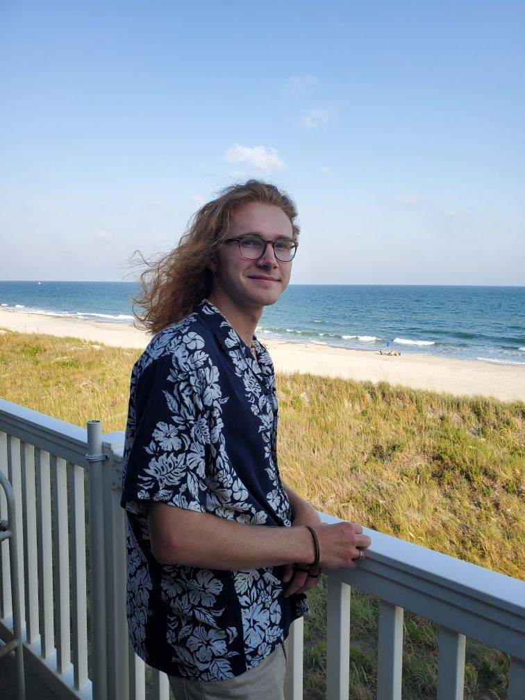
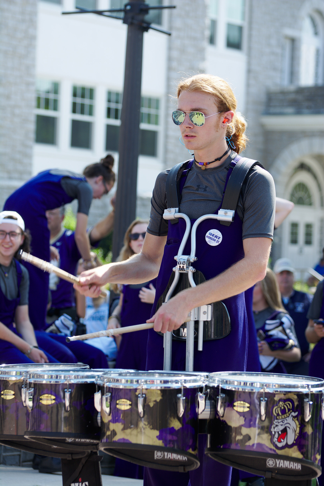

About
I’m currently a Junior Media Arts and Design major at James Madison University, with a concentration in Interactive Design and a minor in Music Industry.
I was originally born in Harrisonburg, Virginia, which is where I now go to school at James Madison University. I grew up, however, in a small town about 11 miles east of Harrisonburg known as McGaheysville, where my parents and my younger sister, Avery, who’s now a high school senior, still live. My older brother, Jared, works and lives near Harrisonburg currently as well. When I was younger, I used to play a lot of sports, particularly baseball, which was mostly through the influence of my dad who did the same thing when he was a kid. Baseball remains my favorite sport and it was my main hobby for a long time until I entered middle and high school, which is when I discovered band. I grew to love band as an activity and music in general by this point, with drums/percussion being my instrument of choice and the new constant, daily obsession.
The more I became involved in music at school, the less I was paying attention to sports, baseball eventually being the last one I played, which happened to be my freshman year of high school. During those four years of high school, I was able to be involved in Marching Band, Percussion Ensemble, Symphonic/Concert Band, Jazz Ensemble, Pep Band; if it was a group that had any form of drums/percussion to it, I was there. This pretty much continued on up until now in college, though as I eventually transition into my senior year, the number of bands/ensembles will unfortunately have to decrease in order for me to stay on top of my work and ensure that I graduate on time. People usually ask at this point why I’m not just a music major. Well, it’s mostly because I wanted to be able to separate music from work, which is essentially what I was able to do when I went through school, and still keep it as a big part of my life. I’m also managing to do this so far by working on a minor in Music Industry.
Aside from going to school and playing music, I also love the outdoors and most any activity that one could do on nice day; whether that be biking, rock climbing, hiking, kayaking, fishing, or camping just to name some of my favorites. I’m also a pretty big film buff and have been collecting movies on VHS, DVD, and Blu-Ray since I was kid.